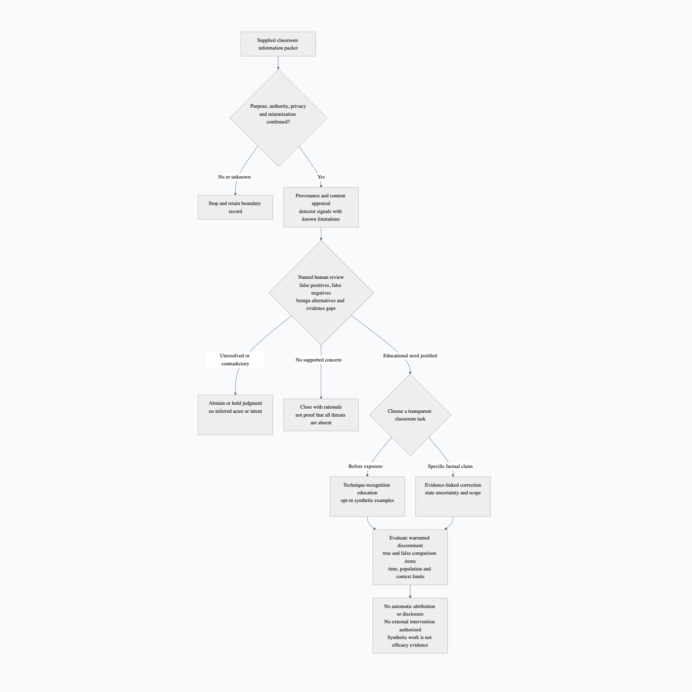

Information Warfare and Cognitive Security
Information Warfare and Cognitive Security figures and course links: visual evidence, source flow, and navigation
The module uses [@fig:cognitive-security-defensive-control-stack] and [@fig:part-psychological-operations-and-influence-module-map] to map its evidence flow, safety boundaries, review artifacts, and refresh cues.
Navigation links: [@sec:curriculum_orientation], [@sec:part-psychological-operations-and-influence], [@sec:chapter-social-engineering], [@sec:part-counterintelligence].

Detailed description of figure cognitive security defensive control stack
This process-flow figure is assigned to the psychological operations and influence / information warfare and cognitive security section and should be read as an accessible equivalent for Cognitive Security: Fallible Signals and Reviewed Classroom Choices. The short alternative identifies the figure as: Defensive classroom flowchart places permission and privacy checks before source and detector appraisal. Human review considers false positives, false negatives, benign alternatives and unresolved evidence, then may close, abstain, or select a transparent educational example or factual correction—not actor accusation or external action. The full visual conveys author-defined instructional stack, not a validated control sequence, permission and privacy precede supplied-packet appraisal, fallible detector outputs require human review of false positives, false negatives and benign alternatives, unresolved cases abstain rather than infer actor identity or malicious intent, prebunking and claim-specific correction are distinct classroom options, and warranted discernment is separate from trust, sharing intention, observed behavior and demonstrated intervention efficacy. The caption explains the reader task as follows: This author-defined teaching stack treats detector outputs as fallible signals, not proof of malicious intent or actor identity. Human review tests benign alternatives and missing evidence before any classroom disposition. Prebunking before exposure and correction of a specific false claim are distinct options, not mandatory sequential stages. Evaluate warranted discernment with true and false comparison items; trust, sharing intention, observed behavior, and intervention effectiveness are separate questions. Use the figure to inspect structure, evidence boundaries, provenance cues, review ownership, and refresh triggers; do not treat color, placement, or arrow direction as hidden scoring, operational instruction, or empirical measurement unless the caption explicitly says a count or metric is being shown.
This module teaches the Cognitive Security and Influence Resilience lane through a bounded, source-backed coursebook chapter. [ageint238]; [ageint239].
Cognitive Security and Influence Resilience frame for Information Warfare and Cognitive Security: source context, topic focus, and reader task
Navigation. Parent section: [@sec:chapter-information-warfare-and-cognitive-security].
Information Warfare and Cognitive Security orientation: reader task, conceptual primer, outcomes, and vocabulary
Navigation. Parent section: [@sec:chapter-information-warfare-and-cognitive-security].
Information Warfare and Cognitive Security conceptual primer: source context, core model, and reader task
This chapter teaches cognitive security as protection of attention, trust, memory, and decision quality without creating manipulation. The chapter uses Cognitive-Resilience Lens to connect definitions, evidence tests, practice artifacts, and review gates for Information warfare: historical policy arguments and theory; Military deception: historical arguments and limits of effectiveness claims.
The central distinction is to separate analysis of influence from persuasion design. Core topics include Information warfare: historical policy arguments and theory; Military deception: historical arguments and limits of effectiveness claims; Automated Influence and the Cognitive Security Challenge. Each topic covers meaning, evidentiary support, common misconceptions, and safety boundaries.
Governance requirements use verified official, standards, public-domain, or scholarly anchors such as [official_cisa_foreign_influence]; [official_nato_counter_information_threats]; [official_cisa_election_security_influence]. Technical, theoretical, or empirical statements require direct domain sources and are limited to what those sources establish. [ageint238]; [ageint239].
Learners move from vocabulary and the Cognitive-Resilience Lens distinction through topic lessons on Information warfare: historical policy arguments and theory with evidence and misconception checks, then assemble a narrative-risk map with provenance, uncertainty, audience harms, and response options with safety and rights gates.
Information Warfare and Cognitive Security learning outcomes: analytic moves, evidence duties, and transfer
Navigation. Parent section: [@sec:chapter-information-warfare-and-cognitive-security].
- Connect Information warfare: historical policy arguments and theory and Military deception: historical arguments and limits of effectiveness claims to Cognitive Security and Influence Resilience by naming shared vocabulary, evidence burden, and audience-facing caveats.
- Build a narrative-risk map with provenance, uncertainty, audience harms, and response options that keeps observation, inference, uncertainty, source quality, reviewer decision, and refresh trigger separate.
- Apply the key distinction: separate analysis of influence from persuasion design; show where an apparently useful shortcut would cross that line.
- Diagnose failure modes such as counter-messaging as manipulation, overclaiming intent, pathologizing audiences, and collapsing uncertainty into moral certainty, then write one recovery move for each failure mode that preserves the learning objective.
- Teach the defensive boundary back to a peer: practice uses benign simulations and resilience education; it does not create persuasion campaigns, impersonation, or deception plans.
Information Warfare and Cognitive Security core vocabulary: source terms, method roles, and safety limits
Navigation. Parent section: [@sec:chapter-information-warfare-and-cognitive-security].
| Term | Working definition |
|---|---|
| Narrative provenance | where a claim, frame, or story came from and how it spread |
| Prebunking | transparent education about misleading patterns before exposure; its effectiveness and transfer require evidence rather than assumption |
| Audience harm | a privacy, dignity, autonomy, or trust risk for people receiving information |
| Attribution caution | the rule that intent and origin claims need strong evidence |
| Resilience response | a transparent education, correction, or process improvement that avoids manipulation |
| MISO boundary | the separation between this classroom analysis and authorized military influence activities; MISO is not defined simply as covert messaging |
| Inoculation | an approach intended to build recognition of misleading tactics; it does not imply immunity or proven efficacy for a particular audience |